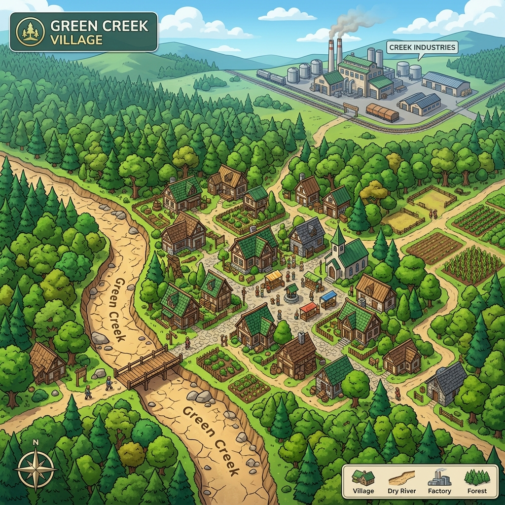

TextQuest AI v0.5
🧠 歡迎來到 TextQuest AI 探究學習系統
本系統基於「限定故事世界」理念設計。請選擇您的角色以開始體驗。
教師設計主題選擇
🛠️ 請選擇欲編輯的探究主題
您可以選擇下方預設的多主題模組進行編輯與微調，也可以從頭開始設計或載入最新的自訂草稿。
1. 活動設定
🔍
文本微解密
探究事件的潛在動機、因果關係與事實真相。
💬
多角度觀點
比較不同利益關係者的觀點與立場。
💡
概念探究
探索科學、歷史或社會學科的核心概念與事實。
🧭 探究場景地圖
點擊卡片進行編輯，或使用 AI 助手自動生成。
🤖
AI 協同設計助手
AI 教學設計助手準備就緒。請輸入探究文本以開始設計。
1
深度文本分析
識別文本中的核心事件、重要概念與學生常見的迷思概念。
2
自動生成場景與角色
依據文本內容，自動生成具有不同觀點立場的角色與線索。
3
任務流程規劃
為學生規劃 30 分鐘的課堂探究任務與引導流程。
4
設計品質與文本佐證關聯性檢查
限制 AI 角色僅能依據文本內容回答，避免產生幻覺。
AI 文本分析結果
探究主題選擇
🧭 請選擇你的探究任務
請選擇一個由老師設計或系統預設的探究活動，開始進行你的證據推理調查。
探究任務簡報
綠溪庄的失落水源 (The Lost Riverwater)
👥 身份頭銜: 獨立探究調查員
⏱️ 時間限制: 30 分鐘
🎯 學習對象: 國中八年級
🎯 你的探究任務與目標
（由 JavaScript 動態填入）
📝 最終學習成果要求
（由 JavaScript 動態填入）
📖 探究調查指南：
- 在地圖上移動到不同的場景以尋找線索。
- 訪談場景中的角色。請記住，每個人都有自己的觀點與立場偏見，不會直接告訴你標準答案！
- 將 NPC 對話中的關鍵陳述收集為線索，並與原始文本中的段落建立關聯。
- 請整合你收集到的所有證據與推論，撰寫最終的探究合成報告。
🔍
綠溪庄的失落水源
探究調查中
⏱️
30:00
你收集到的 NPC 角色線索與已綁定的課文證據
📌 引用已收集的線索（點擊插入）
點擊下方線索將其以格式化文字插入至報告游標處。
🧭 探究場景地圖
點擊地圖角色圖示或下方列表探索🧭
正在前往...

💬
請選擇一個場景
點擊地圖上的地點，尋找線索並訪談目擊者。
📍
場景名稱
👥 場景中的人物
💼 收集到的線索與物品
💬
請選擇一位場景中的人物進行訪談
👴
老農夫 阿土伯
💡 建議提問：
📖 探究文本
💡 提示：在文字中拖曳選取句子，然後點擊「將選取文字與線索連結」將其綁定為佐證證據！點擊地圖放大 🗺️
🎉
🤖
你已成功完成所有場景的調查，並撰寫了一份證據充分、邏輯嚴密的探究報告。
🤖
AI 探究學習回饋
正在生成回饋中...
📊
班級探究學習數據分析
26 / 26
已提交學習成果人數
19.5m
平均探索時間
84%
線索收集比例
76%
證據佐證比例
📊 角色(NPC)訪談次數統計
📈 線索收集與課文段落關聯比例
🤖
AI 生成課後教學提示與建議
即時探究狀態📊
對話歷程與佐證細節檢視
綠溪庄水源污染探究分析報告
已使用線索: 3 | 課文證據引用: 3